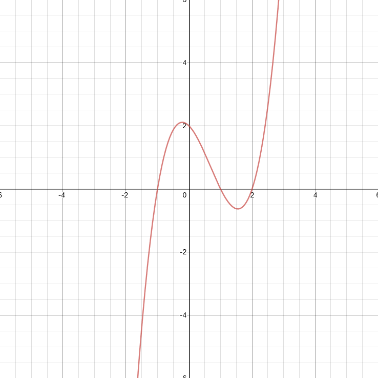

Список источников
Одночлен
Одночлен (или моном) — простое математическое выражение, прежде всего рассматриваемое и используемое в элементарной алгебре, а именно, произведение, состоящее из числового множителя и одной или нескольких переменных, взятых каждая в неотрицательной целой степени.
Многочлен
Многочлен (или полином) — это сумма одночленов.
Алгебраическое уравнение
Алгебраическое уравнение (полиномиальное уравнение, многочленное уравнение) — уравнение вида P(x1, x2, ...) где P — многочлен от переменных x1, ..., xn — которые называются неизвестными.
График алгебраического уравнения